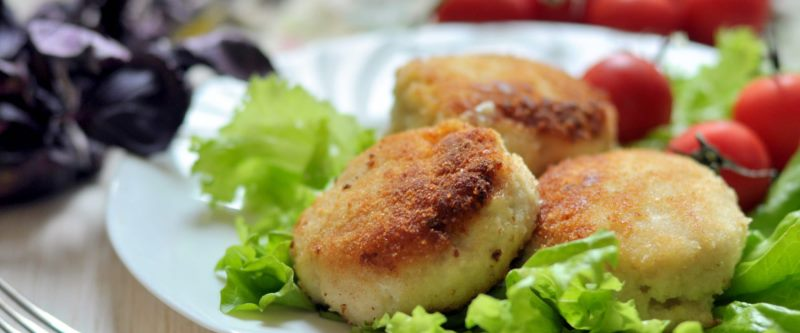

приготовление:
-
Пропустить через мясорубку или измельчить в кухонном комбайне 500 г рыбы — только сайду или сайду и лосось в равных пропорциях — вместе с 1 луковицей. Добавить 35 г манной крупы, 1 яйцо, соль и специи для рыбы. Перемешать до однородности.
-
Мокрыми руками сформировать котлеты или фрикадельки. Готовить на сковороде под крышкой на самом слабом огне с двух сторон до лёгкой румяной корочки.